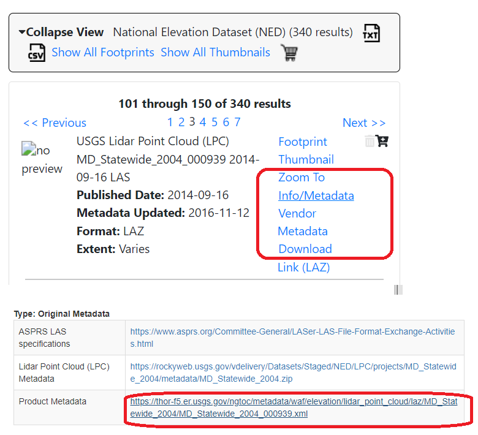
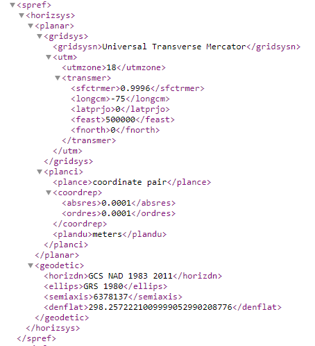
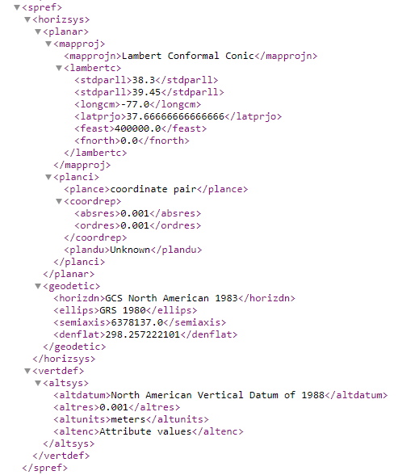
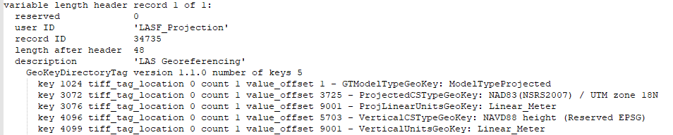
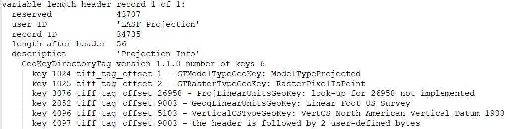
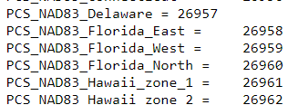
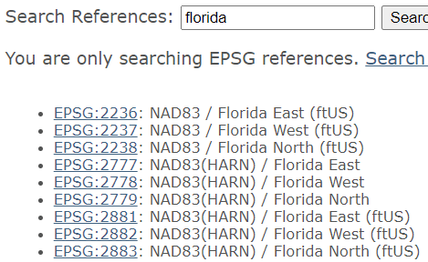

Do not use spaces anywhere in the path to the lidar data. Do not ignore warnings about this.
Place every survey in its own folder, with a short descriptive name, which the program will use to identify it, such as "DUCK_2015" and "Duck_2018"
If you have multiple surveys of a single area, organize them under a single higher level folder such as "Duck_surveys"
Many surveys produce data only in very long strips. These are more cost effective comparted to regular "mow the lawn surveys", but lead to very long and skinny maps, with mostly missing data. These are difficult to visualize
When visualizing or displaying multiple surveys, think about what you want to show, and control this with the checkboxes:
If you get a warning that your data does not have projection information, or has an unsupported projection:
|
 |
Metadata location at USGS National Map |
|
 |
Spatial ref section of a metadata file at the USGS site. It gives the projection as UTM, zone 8. It does not mention the vertical datum. |
|
 |
Spatial ref section of a metadata file at the USGS site. It gives the projection as Lambert Conformal Conic, which is Maryland state plane. It does not specify the type of feet. If the projection is not recognized by LAStools, you will have to get the EPSG code. It gives the vertical datum as NAVD 88 |
|
 |
Metadata from LAStools LASinfofor a LAS file. It gives both the UTM projection, and the horizontal and vertical datums. |
|
Image 1  Image 2  Image 3  |
Image 1. Lastools Lasinfo extract. The projection is defined in the LAS file, but it is state plane and LASTools (written by a German) does not understand the Geotiff code 26958; EPSG code is more common. Image 2. Geotiff codes, from http://geotiff.maptools.org/spec/geotiff6.html or https://svn.osgeo.org/metacrs/geotiff/trunk/geotiff/html/usgs_geotiff.html. You need to do a search of 26958, to find it is Florida east. Image 3 EPSG code from https://spatialreference.org/ref/epsg/?search=florida&srtext=Search These are the results for Florida, and we already know it was the east zone and in feet, so we want EPSG 2236. Get the UTM zone for Florida, 17. We can now use LAStools with Assign projection by EPSG (2236) and reproject to UTM zone 17 N, with the elevations in feet. |
Last revision 3/7/2022